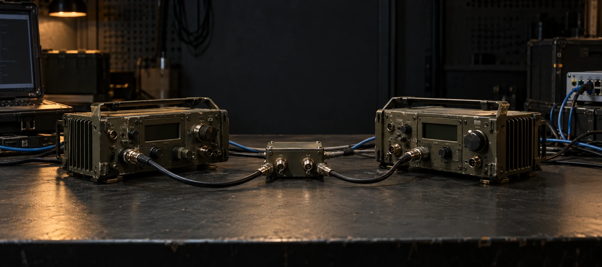
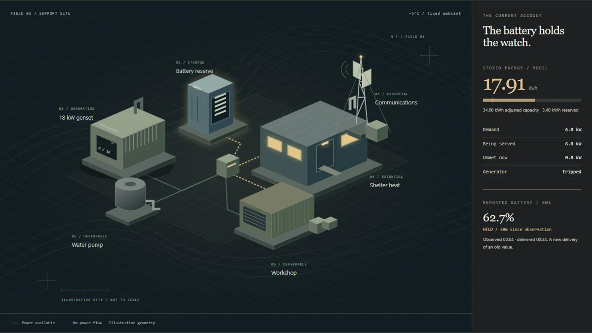
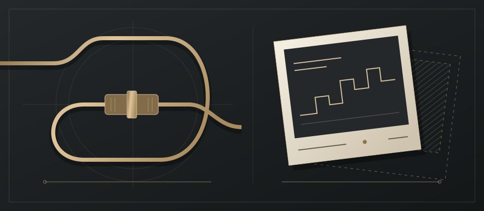
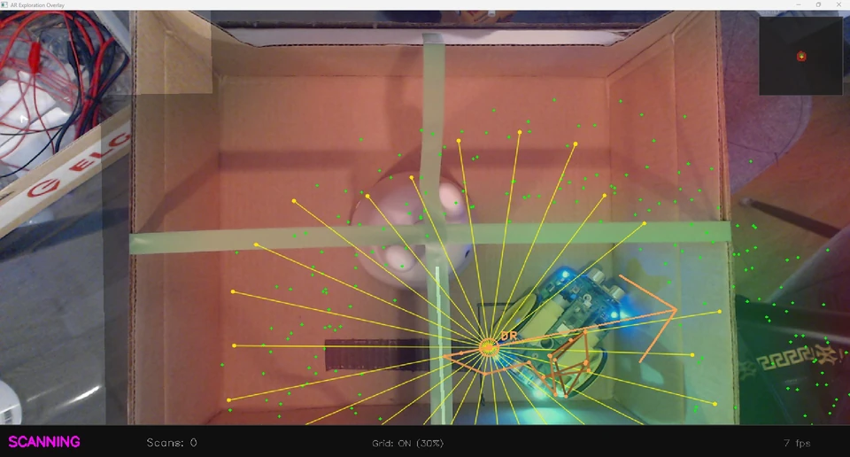

THE WORK / OPEN TO INSPECTION
Working pieces.
Loose ends included.
Some things need more than a finished picture. An interruption you can replay. A number you can open. A decision with its evidence still attached.

AI-generated hardware illustration. The TNT room uses published, historical packet observations.
Illustrative room. Published data and explicit scenario assumptions remain separately inspectable.
008 / Data center
Follow the electricity through a room, a shared Finnish grid and the heat that may reach a home. Open the assumptions behind each number.
Open the specimen ↗
Captured software study. Inspectable energy model and explicit scenario assumptions.
007 / Field power
When energy becomes scarce, recovery is a choice. Change the loads and inspect what the site can keep running.
Open the specimen ↗
Captured software study. Modelled geometry and conditions are not a navigational reference.
006 / Maritime study
A crossing between Helsinki and Tallinn, seen from the water and the bridge. Light, weather and instruments belong to the same picture.
Open the specimen ↗
Real coastline with synthetic tracks in this capture. Each room names its own recorded, live or authored evidence.

Authored connection study. Its events and evidence can be inspected.
004 / LiveConnect
A healthy connection can carry an old reading. Interrupt the stream and inspect the difference between reachability and freshness.
Open the specimen ↗
Owner captures. Calibration and ground-truth alignment are not established.
003 / Buggy
A camera, a route and a map do not automatically agree. Inspect the captured views and the limits of the comparison.
Open the specimen ↗
Native footprint plot, not a game capture.
002 / SkyStack / EARLIER EXHIBIT
An earlier homepage exhibit: stamp geometry, replay and a question about what the renderer actually drew.
Visit the homepage exhibit ↗01 / REPLY LOSTAnswer missing.02 / RESULT QUERIEDResult found.1 application at the receiver / both states
Saved simulator record. This exhibit opens on the homepage.
001 / Ajo / EARLIER EXHIBIT
An earlier homepage exhibit: a lost reply, a recovered result and one application at the receiver. Inspect the saved simulator record.
Visit the homepage exhibit ↗